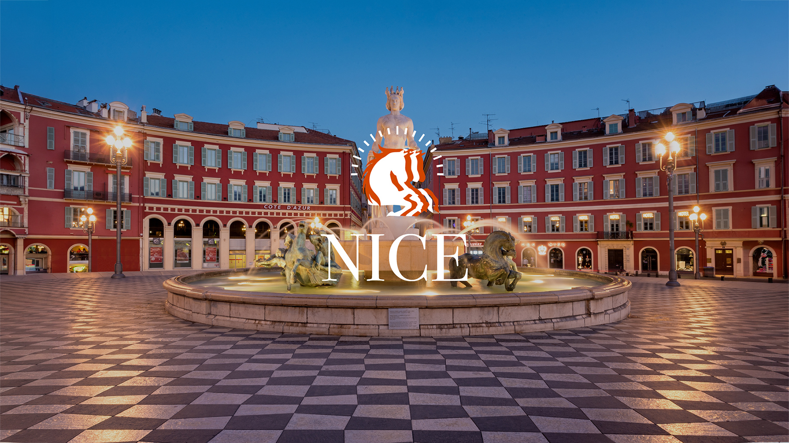
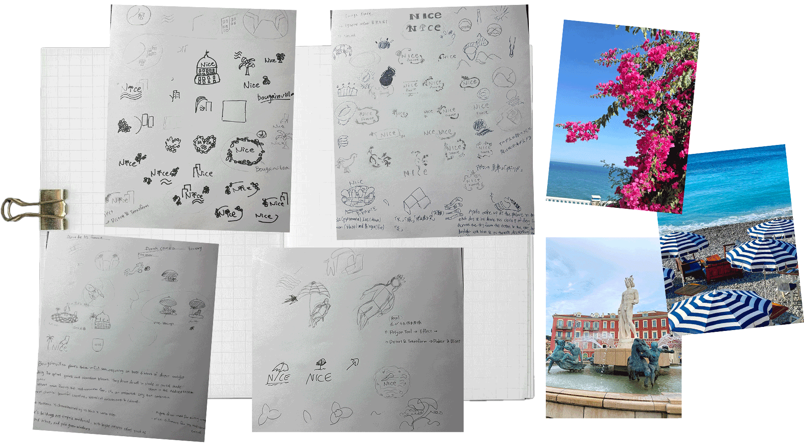
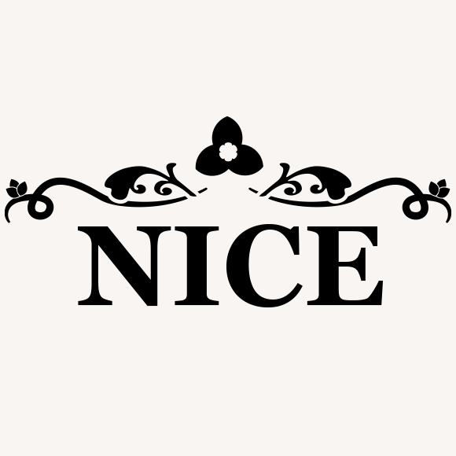
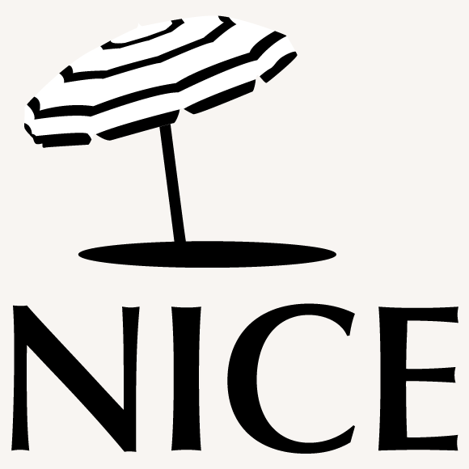
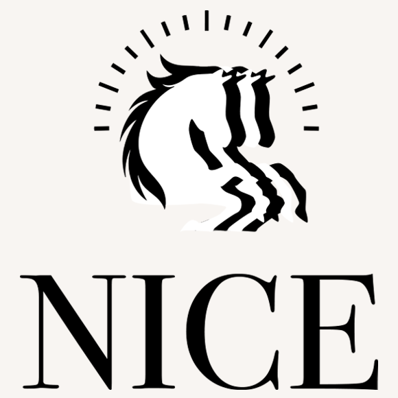

France, Nice
This project tasked me to create a logo for an international city that embodies its spirit, arts, culture, history and present. I chose Nice, France.
Clients: School Projects
Project Type: Logo Design
Competencies: Illustration, visual communication
Software: Illustrator, Photoshop
Design Explorations


Option 1
Bougainvillea
Nice has a Mediterranean climate throughout the year, and you can see many bougainvilleas which bloom in the warm region. There are also art museums and churches of various styles, creating an elegant atmosphere.

Option 2
Blue Parasol
Nice is famous for its blue chairs and blue & white striped parasols. The type is slightly rounded to represent the relaxed atmosphere of Nice, but to avoid being too cute, I chose letters with a modulated tone that have both thin and thick parts.

Option 3
The Four Horses Pulling Apollo
This is a bronze statue of four horses pulling Apollo, located in Place Massena in Nice. Apollo traveled from east to west in the morning in a chariot pulled by four horses, bringing sunlight to the west and driving away the darkness of night. The top of the horse represents the light of the sun.
Final Design
I chose this logo because it symbolizes both cultural heritage and universal values. Inspired by the Apollo statue in Place Massena, the design conveys strength, light, and forward movement. Its bold yet simple form ensures strong recognition, while the sun rays emphasize positivity and energy. The radiating lines above the horse symbolize the Mediterranean sun and its brightness.